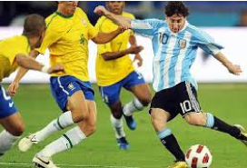

El fútbol
Deporte que se practica entre dos equipos de once jugadores que tratan de introducir un balón en la portería del contrario impulsándolo con los pies, la cabeza o cualquier parte del cuerpo excepto las manos y los brazos; en cada equipo hay un portero, que puede tocar el balón con las manos, aunque solamente dentro del área; vence el equipo que logra más goles durante los 90 minutos que dura el encuentro.
Cada vez que la pelota entra en el arco rival, se consigue un gol (una anotación). El equipo ganador es el que marca más goles en el tiempo reglamentario (dos tiempos de 45 minutos), aunque el empate (la igualdad de goles) es un resultado posible.
Cada vez que la pelota entra en el arco rival, se consigue un gol (una anotación). El equipo ganador es el que marca más goles en el tiempo reglamentario (dos tiempos de 45 minutos), aunque el empate (la igualdad de goles) es un resultado posible.

